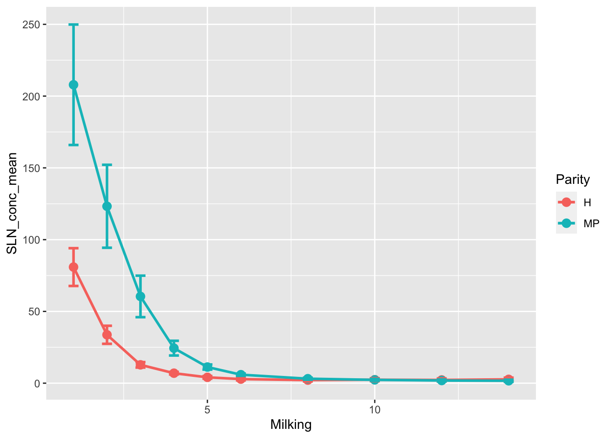
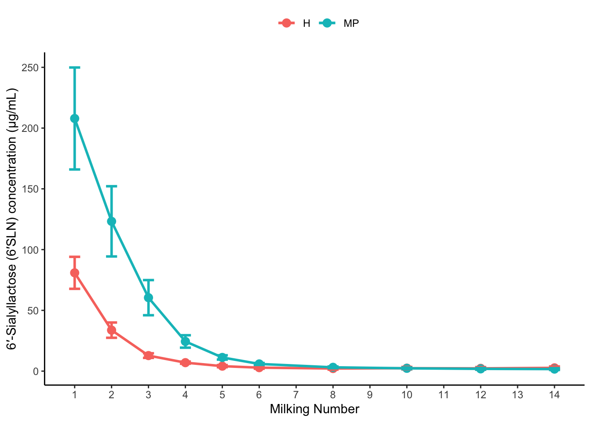
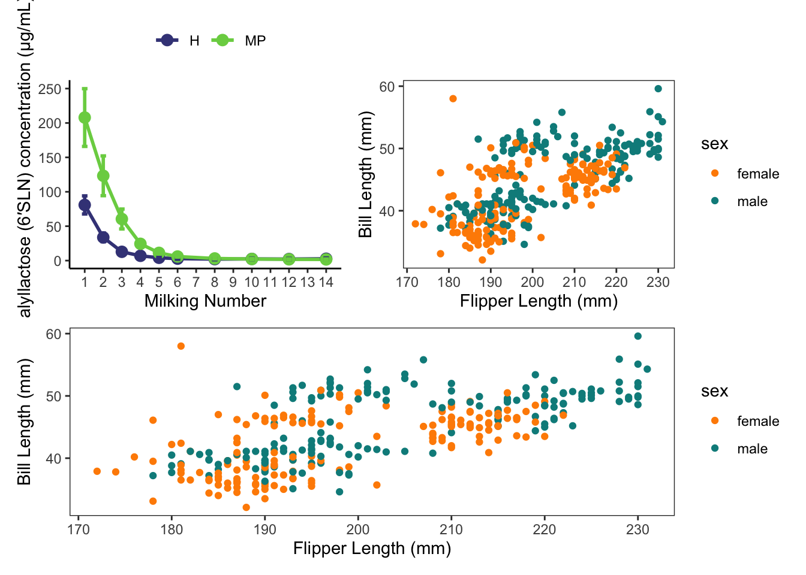
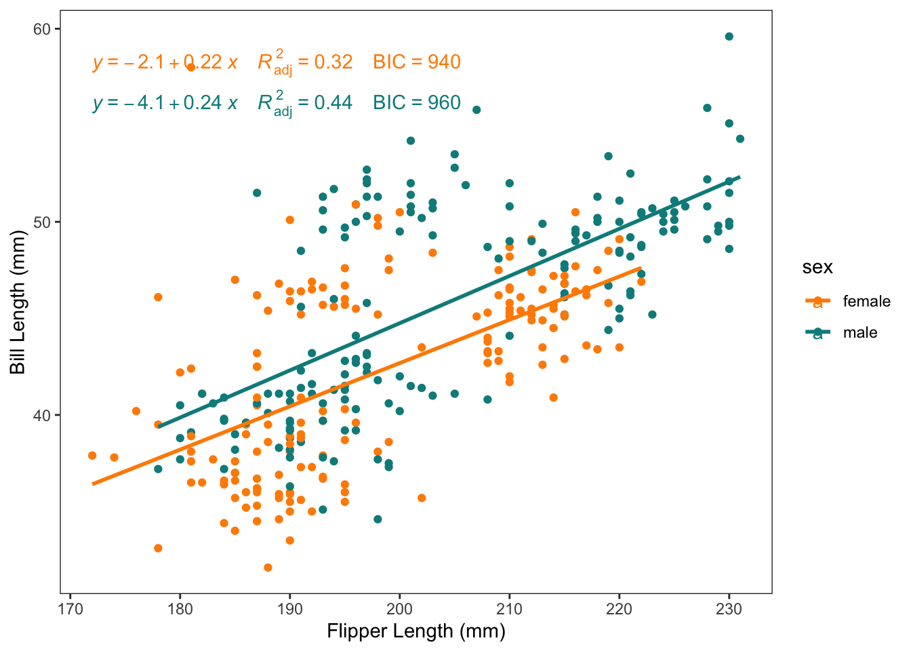
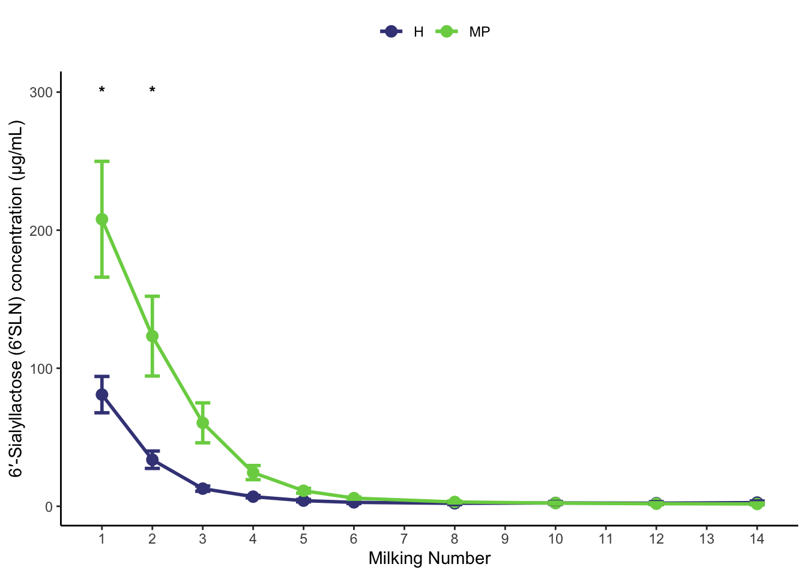

Nearly everything you can see on the plot can be customised. The default values are normally fine, but when we want to communicate something we sometimes need to be a little more intentional about what we want.
Looking at this, we can see that the variable we want to facet by is ‘conc’ vs ‘yield’. We could do this, and it’s perfectly valid. But in reality, these 2 plots are not using the same scale and should be built separately.
Demo of how to do it as-is with facets:
Code
```{r}#| code-fold: true# pivot data to a format that will work with facetingsix_SLN_long <- six_SLN %>%pivot_longer(cols =contains("six_SLN"),names_to ="units_type",values_to ="measured_value")# summarise data and calcuate values we needsix_SLN_to_plot <- six_SLN_long %>%group_by(units_type, Parity, Milking) %>%summarise(across(measured_value, list(mean =~mean(.x, na.rm=TRUE),sd =~sd(.x, na.rm=TRUE)),.names ='value_{.fn}'),n =n()) %>%mutate(value_SEM = value_sd /sqrt(n),ymin = value_mean - value_SEM, ymax = value_mean + value_SEM) %>%select(-value_sd, -n)```
`summarise()` has grouped output by 'units_type', 'Parity'. You can override
using the `.groups` argument.
Instead, let’s focus on the concentration plot for now. First, lets remove the yield column, summarise the data, and add on the columns we need to plot with:
Before we get too fancy, let’s increase the size of our lines and points:
```{r}(p_CONC_6_SLN <-six_SLN_conc_to_plot %>%ggplot(aes(x = Milking, y = SLN_conc_mean,colour = Parity))+geom_line(linewidth =1)+geom_point(size =3)+geom_errorbar(aes(ymin = ymin, ymax = ymax), linewidth =1,width =0.3) # this is the width of the eror bar itself. See help for info.)```

6.1 Labels and Legends
Modifying the axis labels and legend title is often a good place to start.
Now, we might want to remove the heading for the legend and put the legend at the top:
```{r}# rename legend to nothing ("")# the legend represents an aesthethic, so it's actually this label we are changing.(p_CONC_6_SLN <- p_CONC_6_SLN+labs(colour ="")+# change position of legendtheme(legend.position="top"))```
If we quickly wanted to increase the number of ‘breaks’ (the lines we see), then we could increase the n.breaks to a high number. Otherwise we can be more specific.
```{r}(p_CONC_6_SLN <- p_CONC_6_SLN+scale_x_continuous(breaks =seq(from =0, to =max(six_SLN_conc_to_plot$Milking), by =1) ) # we used the seq function to make our numbers. )```

We can also edit the scales if we want to modify the colours used. Previously we were modifying a continuous scale because the x axis is numbers. This time, the colour scale is discrete, but if we want to control the colours manually we can use:
This wouldn’t be too handy if someone who was colourblind saw this. There’s packages dedicated to colour blind friendly plots, such as viridis. Also check out the ColorBrewer: https://ggplot2.tidyverse.org/reference/scale_brewer.html
To use the patchwork we simply load the package, and ‘add’ them together:
```{r}library(patchwork)p_left + p_right```
There’s more complex ways to join plots together too, so check out the help page for it.
```{r}(p_left + p_right) / p_right```

6.6 Adding regressions with labels
To revisit automatic regression lines, sometimes we want to display some summary stats as well. The ggpubr package has a bunch of useful additions to ggplot, including this one.
```{r}p_right +geom_smooth(method ='lm', se =FALSE)+ ggpubr::stat_regline_equation(aes(label =paste(after_stat(eq.label), after_stat(adj.rr.label), after_stat(BIC.label),sep ="~~~~")))```
`geom_smooth()` using formula = 'y ~ x'

6.7 Adding p-values
The ggpubr package is also great for adding p-values to plots. It can get a little tricky when the p-values are calculated elsewhere (e.g. SAS), but the documentation explains everything.
Let’s pretend we have a couple of P values calculated from outside of R. We can recreate some dummy values here:
```{r}# these column names are important. It needs to have group1 and group2, and the p.adj is the name of the label we tell it later.stats <- tibble::tribble(~group1, ~group2, ~p.adj,1, 2, 0.043,1, 3, 0.001,2, 3, 0.002 )stats```
Of course, this doesn’t make a lot of sense for this graph. But you can see how it would be useful for pairwise comparisons.
6.8 Manual annotations
If you just wanted to add some stars, like in the original Fig 3 of the paper, we could also annotate the graph manually.
```{r}# add annotation column to original data and copy to use herequick_annot_data <-six_SLN_conc_to_plot %>%ungroup() %>%select(Milking) %>%mutate(annot =case_when(Milking %in%c(1,2) ~"*", TRUE~""))p_CONC_6_SLN +geom_text(aes(x = Milking, y =300, label = annot), data = quick_annot_data, inherit.aes =FALSE )```

You could also add lines, or other text using a similar approach: